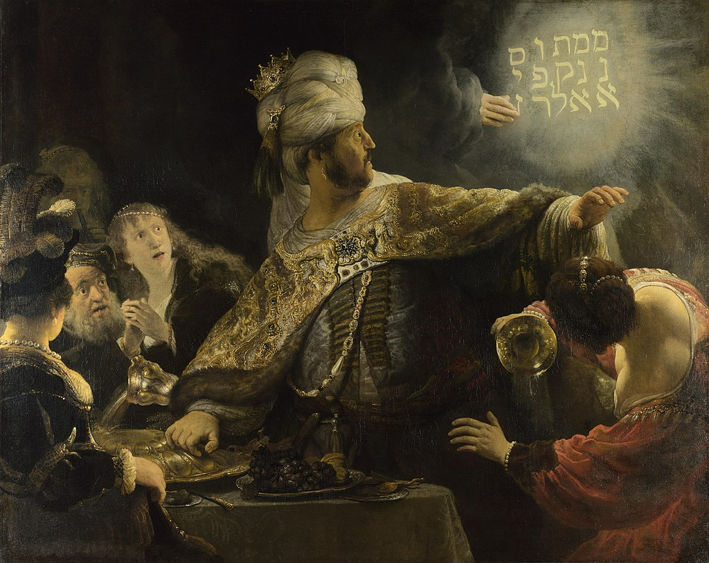

<head>
<meta charset="UTF-8" />
<meta name="keywords" content="drawing, painting" />
<meta name="description" content="drawings by Sunjy" />
<title>Sunjy</title>
<link rel="shortcut icon" type="image/x-icon" href="../../mImages/mCommon/favicon.ico" media="screen" />
<link rel="stylesheet" type="text/css" href="../../mCsses/mCommon/mCssA.css" />
<link rel="stylesheet" type="text/css" href="../../mCsses/mCommon/mCssB.css" />
<link rel="stylesheet" type="text/css" href="../../mCsses/mCommon/mCssC.css" />
<link rel="stylesheet" type="text/css" href="../../mCsses/mCommon/mCssD.css" />
<link rel="stylesheet" type="text/css" href="../../mCsses/mContent/mCssA.css" />
<link rel="stylesheet" type="text/css" href="../../mCsses/mContent/mCssB.css" />
<link rel="stylesheet" type="text/css" href="../../mCsses/mContent/mCssC.css" />
<link rel="stylesheet" type="text/css" href="../../mCsses/mContent/mCssD.css" />
</head>
<script type="text/javascript" src="../../mScripts/mContent/mContentAA.js" /></script>
<script type="text/javascript" src="../../mScripts/mContent/mContentAB.js" /></script>
<script type="text/javascript" src="../../mScripts/mContent/mContentAC.js" /></script>
<script type="text/javascript" src="../../mScripts/mContent/mContentAD.js" /></script>
<script type="text/javascript"></script> 
<script type="text/javascript">
document.write('<div class="mImgAbsolute"></div>');
/*
document.write('<p class="mFontSizeBColor" />From a white paper...</p>');
document.write('<table class="center"><tr><td>');
document.write('');
document.write('</td></tr></table>');
*/
</script>


<script type="text/javascript">
document.write('<p class="mFontSizeBColor" />Belshazzar’s Feast</p>');
document.write('<p class="mFontSizeSColor" />“Belshazzar’s Feast” by Rembrandt van Rijn depicts a story from the Old Testament Book of Daniel. The background of the story is that the Babylonian King Nebuchadnezzar had looted the Temple in Jerusalem.<br><br>He stole the sacred artifacts, such as the golden cups, from the Temple. In Book of Daniel, his son Belshazzar used these cups for a great feast. During the feast, the hand of God appeared and wrote an inscription on the wall.<br><br>Belshazzar and his advisers were not able to decipher the inscription and had to send for Daniel to help them with the translation. The inscription on the wall states:<br><br>“God has numbered the days of your kingdom and brought it to an end.<br> You have been weighed in the balances and found wanting.<br> Your kingdom is given to the Medes and Persians.”<br><br>This painting was Rembrandt’s attempt to establish himself as a painter of large, baroque history paintings.<br><br>Rembrandt’s technique is exceptional, and his palette was unusually rich, encompassing such pigments as vermilion, smalt, lead-tin-yellow, yellow and red lakes, ochres, and azurite.<br><br>Rembrandt lived in the Jewish Quarter of Amsterdam and derived the Hebrew inscription from a book by his friend, the Rabbi, and printer, Menasseh ben Israel.<br><br>Rembrandt mistranscribed one of the characters and arranged them in columns, rather than right to left, as Hebrew is written.<br><br>In 1834 the painting was stolen from its then-owner, a picture dealer living in London. One of the thieves was found guilty and transported to Tasmania, Australia.</p>');
document.write('<table class="center" /><tr><td>');
document.write('<br>He stole the sacred artifacts, such as the golden cups, from the Temple. In Book of Daniel, his son Belshazzar used these cups for a great feast. During the feast, the hand of God appeared and wrote an inscription on the wall.<br><br>Belshazzar and his advisers were not able to decipher the inscription and had to send for Daniel to help them with the translation. The inscription on the wall states:<br><br>“God has numbered the days of your kingdom and brought it to an end.<br> You have been weighed in the balances and found wanting.<br> Your kingdom is given to the Medes and Persians.”<br><br>This painting was Rembrandt’s attempt to establish himself as a painter of large, baroque history paintings.<br><br>Rembrandt’s technique is exceptional, and his palette was unusually rich, encompassing such pigments as vermilion, smalt, lead-tin-yellow, yellow and red lakes, ochres, and azurite.<br><br>Rembrandt lived in the Jewish Quarter of Amsterdam and derived the Hebrew inscription from a book by his friend, the Rabbi, and printer, Menasseh ben Israel.<br><br>Rembrandt mistranscribed one of the characters and arranged them in columns, rather than right to left, as Hebrew is written.<br><br>In 1834 the painting was stolen from its then-owner, a picture dealer living in London. One of the thieves was found guilty and transported to Tasmania, Australia." />');
document.write('</td></tr></table>');
</script>


